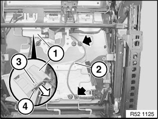
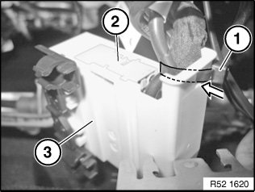
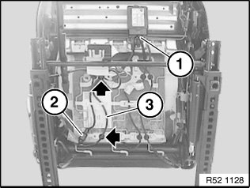
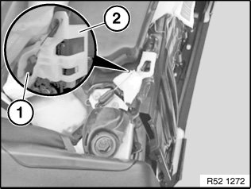
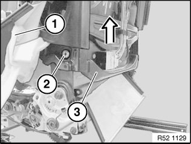
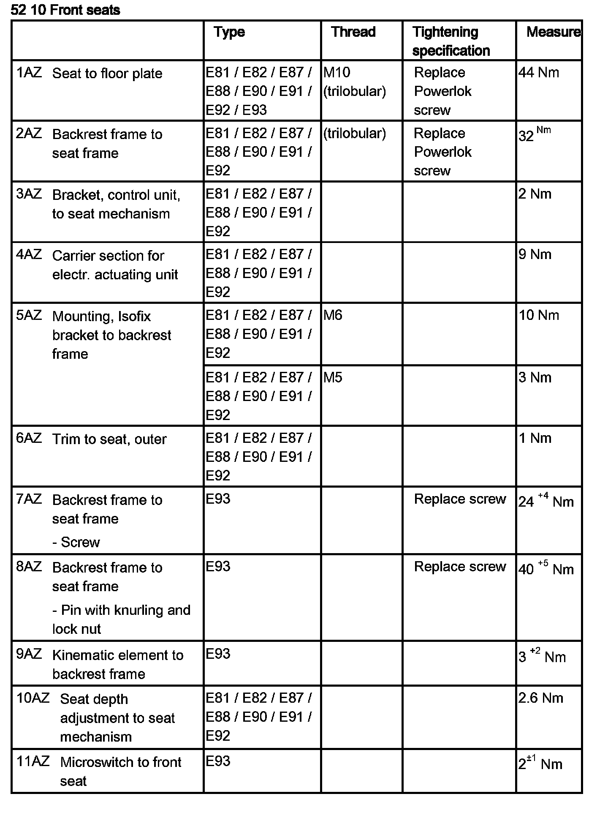

52 13 030 Removing and Installing/Replacing Backrest Frame on Left or Right Front Seat
52 13 030 Removing and installing/replacing backrest frame on left or right front seat

Necessary preliminary tasks:
- Remove front seat
- Remove rear panel on front seat backrest

Unclip cable (2).
Release airbag wiring harness (2) from cable holders on seat mechanism.
Cut through cable ties.
Raise release clip (3) and pull plug (4) out of plug housing (1).

Installation:
Always feed in cable tie (1) at narrow end of plug housing in direction of arrow.
Cables must be secured with insulation under cable tie.
Firmly tighten cable tie (1) to relieve strain. It must not be possible to move the cable.
Make sure plug (2) is correctly locked in plug housing (3).

Unfasten plug connection (1) and disconnect.
Unclip cable.
Release wiring harness (3) from cable holders on seat mechanism.
Unfasten plug connection (2) and disconnect.
IMPORTANT: Feed all wiring harnesses carefully through the seat and backrest mechanism as the edges of the frame can be sharp.

E81, E82, E88, E92 only:
Unhook seat covers on left and right.
Unclip ball socket (1) from ball head on left and right.
Installation:
Ball socket (1) must snap audibly into place.
Ball socket (1) must be able to move freely on ball head.
Actuate rear catch and remove guide for Bowden cable (2) towards rear with a turning motion.

Unhook backrest cover (1) on left and right.
Release screws (2) on left and right.
Tightening torque 52 10 02AZ.
Remove backrest frame (3) completely towards top.

Replacement:
- Remove backrest cover with padding.
